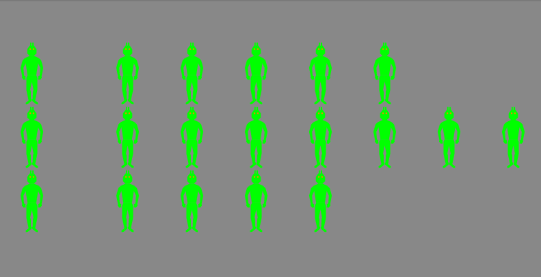
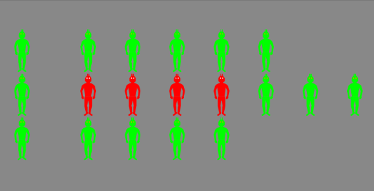
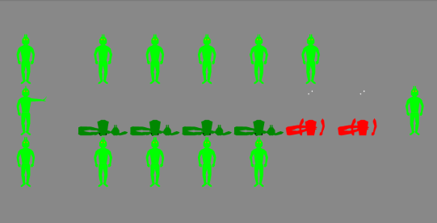
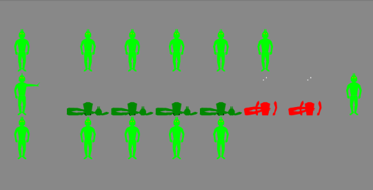

Droid Nim is a game that challenges the mind while illustrating some advanced mathematical ideas.
It can be difficult to defeat the computer if you don’t know what you’re doing,
and even if you do, one slip-up can cost you the game.
Back to the top
This section is divided into the following subsections:
There are two groups of droids: a column on the left,
and three or more rows on the right.

To play, choose any row, and any droid in the group on the right.

Lift your finger,
and the leftmost droid will deactivate all droids between them, including the one you selected.
 At this point, your opponent will do the same thing.

There are two ways of playing the game.
At this point, your opponent will do the same thing.

There are two ways of playing the game.
- In normal play, the last player to deactivate a droid wins.
- In misère play, the last player to deactivate a droid loses.
Normal play is the default, but you can change to misère play using the Settings.
You can play a nearby human using Bluetooth!
To do so, touch the two-player icon in the toolbar.
The app will automatically enable Bluetooth if it is available on your device,
but you can only play a device with which you are already paired,
and the app will not pair two devices for you.
To pair devices, go into your device’s Settings (not the app’s Options),
select Bluetooth, and select a device you want to pair.
Both you and your opponent must pair your devices before you can play!
Once your devices are paired, you can decide whether to host or join a game.
One player will host the game, while the other player will join.
The player who joins has to play whatever game is on the host’s device,
which puts him at a disadvantage; to counter that, the player who joins gets to go first.
When the game ends, the Bluetooth connection is disconnected, but Bluetooth is left on.
To play again, you need to touch the two-player icon again,
and decide whether to host or join. (You will not need to re-pair your devices.)
If you do not want to play again, you should probably turn off Bluetooth,
unless you’re using it with other devices.
You can do that in your device’s Settings (not the app’s Options).
We strongly discourage you from adjusting game options
in the middle of a two-player game!
Depending on the changes you make, the game will restart, and communication will be lost.
This prevents someone from changing the criterion for winning mid-course.
Back to the top
If you select the “Settings” (gear) icon in the toolbar,
several options will appear, along with some explanations.
Here’s a little more detail on how some of them work.
One arm behind my back —
If a winning move is available, the computer will find it.
If you check this box, however, the computer will sometimes — sometimes —
“make a mistake” and choose a random square
even when it knows a different square would guarantee a win!
Misère play —
Ordinarily, the game decides winners and losers according to normal play.
If you check this box, the game decide winners and losers according to misère play.
(The difference between these two is explained above.)
Think before you do this as it will start a new game!
Back to the top
Droid Nim incorporates ideas from number theory and combinatorial game theory.
You can determine a “value” of a game by writing each row as a sum of powers of two,
and canceling any matching powers.
For instance, if
- row 1 has 6 droids,
- row 2 has 3 droids, and
- row 3 has 4 droids,
then as powers of 2,
- row 1 has 4 + 2 droids,
- row 2 has 2 + 1 droids, and
- row 3 has 4 droids.
After canceling matching powers, we see that the game’s value is
(4 + 2) + (2 + 1) + (4) = 1 .
For a winning strategy:
- In normal play you want the game’s value to be 0 at the end of your turn.
-
In misère you want to play the same way,
except that you want to leave an odd number of rows with one element.
In the example above, then, we should remove 1 droid from row 2,
as all the powers will subsequently cancel.
As a courtesy, Droid Nim ordinarily shows you the game’s current value.
You can use this to help determine your next move.
You can read more about Nim if you like.
Back to the top
Droid Nim, Version 1.0 © 2017
App by John Perry.
Please report any bugs to the author.
The source code is available at
GitHub
under the GPL license.
Dedicated to the memory of Leo Christopherson, author of Android Nim (1978).
Back to the top